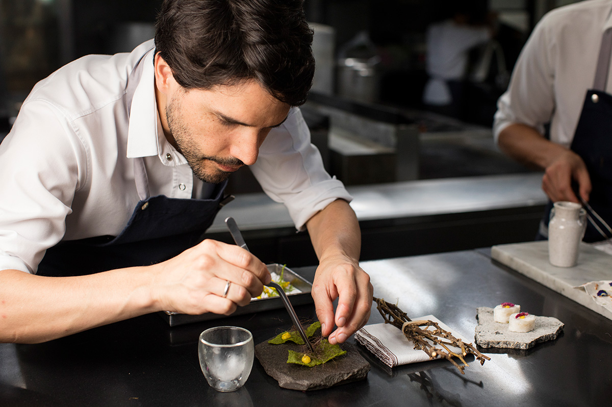
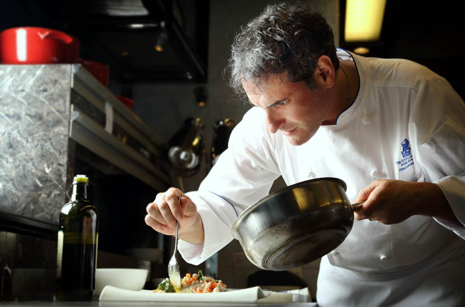
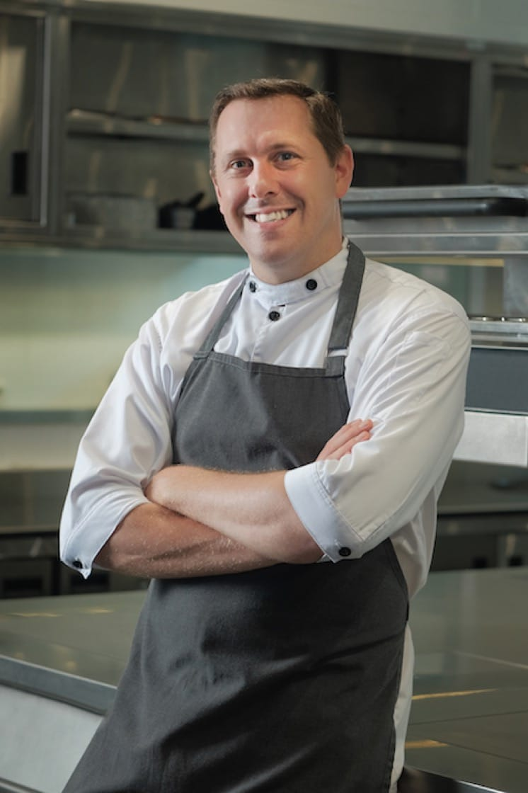

Tjena tjena! Jag heter Grus Snusson och äger restaurangen RESTaurang. Vårt mål med RESTaurang är att omvandla matrester till riktigt go fancy-schmancy fine-dining. Med mig har jag mina två kockar jag kidnappa- ANSTÄLLDE menar jag. Vi tycker att matsvinn är ett stort problem och därför har vi dedikerat oss till ett liv av rester, ett liv där vi använder rester som exotiska färger för att måla exotiska konstverk.

Hejsan. Mitt namn är Rolf Ratatouille och jag började jobba här för 32.5 år sedan. Egentligen kan jag inte laga mat, men eftersom vi arbetar med rester här på RESTaurang tycker jag att det roligaste med mitt jobb är att försöka blanda ihop olika rester och skapa något fint utav dem. Säg inte detta till någon, men jag känner mig fast här, jag har jobbat här så länge och i kontraktet stog det att jag behöver jobba här RESTEN av mitt liv. Hjälp mig. Snälla.

Det är jag som är Lilla Ronny. När jag var barn hade vi för mycket mat hemma, så pass att vi alltid slängde mat efter varje måltid. Efter att ha rest runtomkring i världen och insett förhållandena folk har angående mat öppnades mina ögon för första gången. Jag blev upplyst och inspirerad till att inspirera andra att inte slösa bort matrester. Kort sagt kan man säga att det vi gör här på RESTaurang är genuin konst. Just det, en till grej... Fråga inte var strumpjuicen kommer ifrån. Det är ett... hemligt recept...